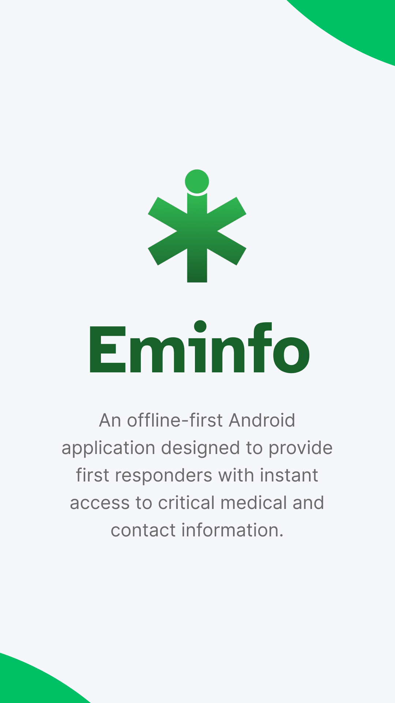
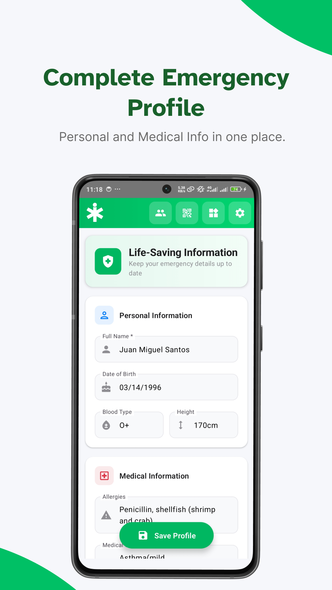
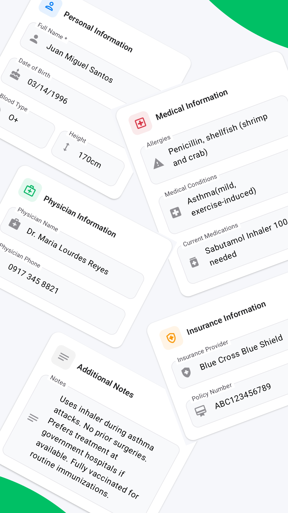
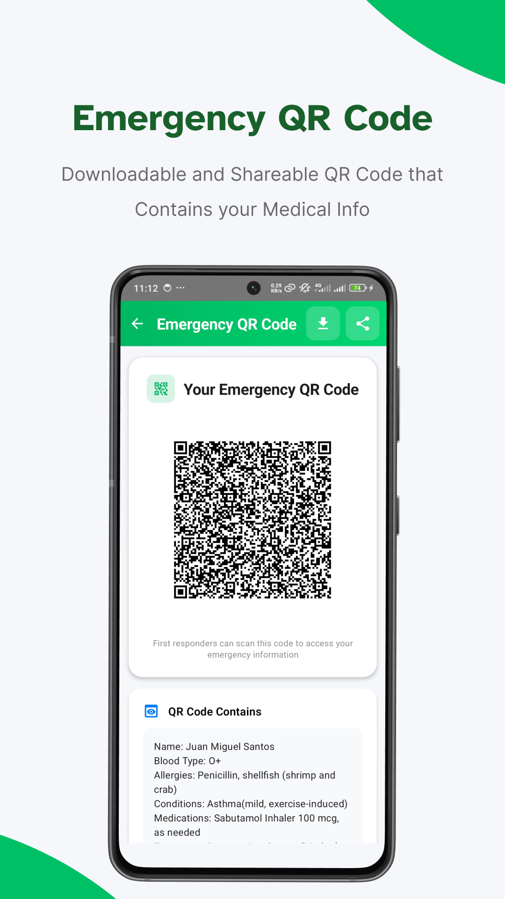
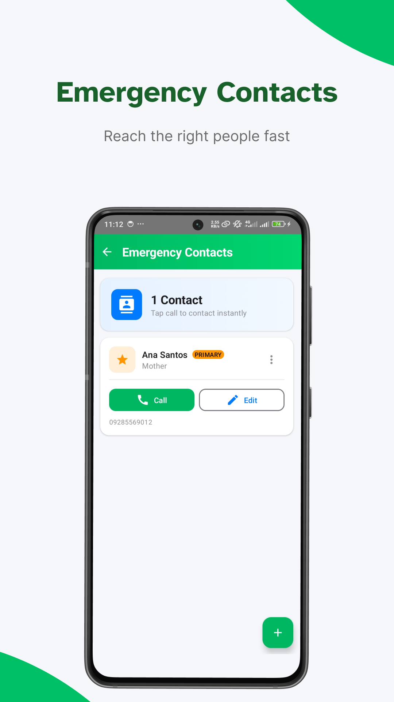
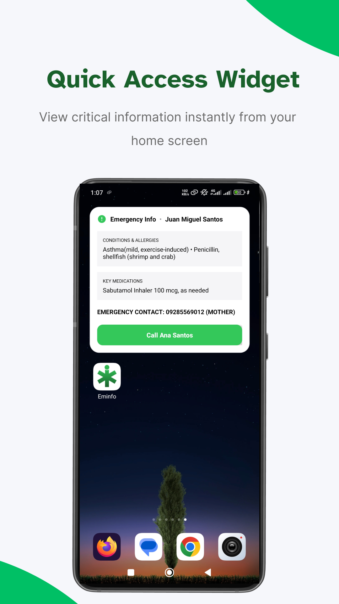

Eminfo - Instant Medical Info
Christopher A. Quinto
12 MB
Size






About this app
Eminfo is an offline-first Android application designed to provide first responders with instant access to critical medical and contact information. Built with modern Android technologies, it prioritizes speed, privacy, and accessibility, ensuring that life-saving data is available when it matters most—even without an internet connection.
Key Features
- Offline Storage: All data is stored locally on the device using Room Database. No internet connection is required, ensuring reliability in remote areas and total user privacy.
- Comprehensive Profile: Detailed fields for:
- Personal Info: Name, DOB, Blood Type, Height.
- Medical Info: Allergies, Medical Conditions, Current Medications.
- Physician & Insurance: Contact details for primary care and insurance policy information.
- Emergency QR Code: Generates a scannable QR code containing selected medical
details.
- Customizable: Users can choose which fields to include in the QR code.
- Shareable: Detailed options to share the image or save it to the gallery for printing or lock screen use.
- Quick Access Widget: (In progress) Home screen usage for instant visibility.
- Emergency Contacts: Dedicated section for primary emergency contacts.
- Modern UI/UX: Built entirely with Jetpack Compose and Material 3, featuring a fluid, responsive design with "Hero" headers and intuitive navigation.